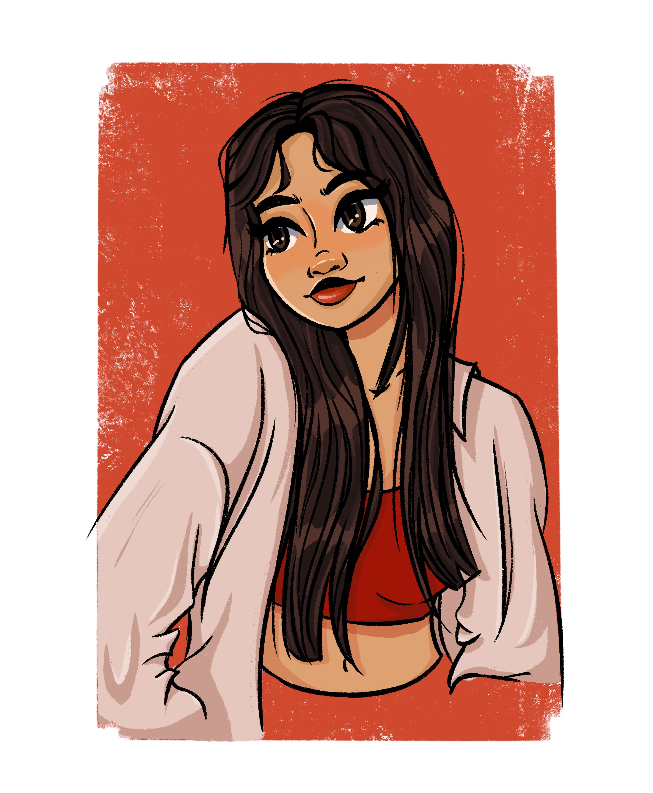

Who am I?
Hi there, my Name is Anna and I'm a mostly self-taught artist from Germany.
I'm currently studying Art and Multimedia at the Ludwig-Maximilians-University in Munich.
This page is an expercise and final project for our Social Media Class but who knows maybe i will turn it into my actual portfolio some day!
Hope you like my work!
Bye for now :)
Anna
